Decision Analysis II¶
Conditional Probabilities¶
Joint & Marginal Probabilities¶
“The table is a useful tool for calculating proportions of potential interest to managers.”
“We can create an entire table of proportions. These proportions can be interpreted as probabilities.”
“Probability” and “Proportion” are used interchangeably.
The probabilities on the inside of the table are called joint probabilities. While the probabilties related to totals are called marginal probabilities. 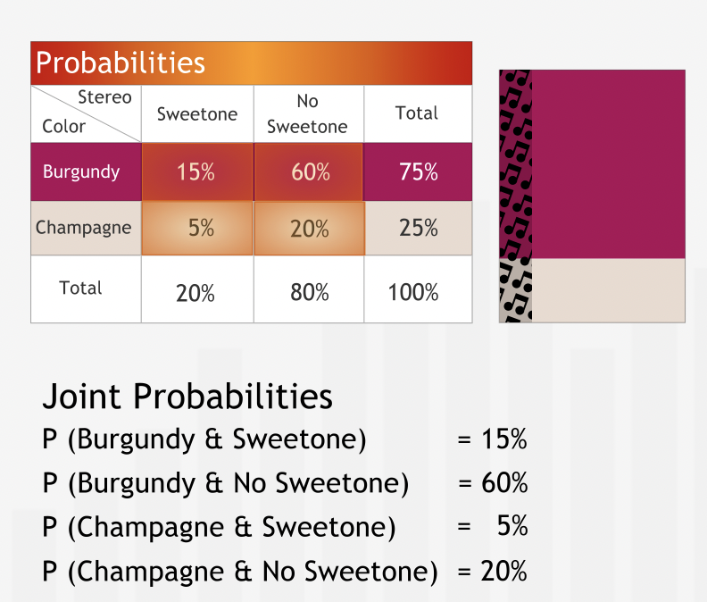 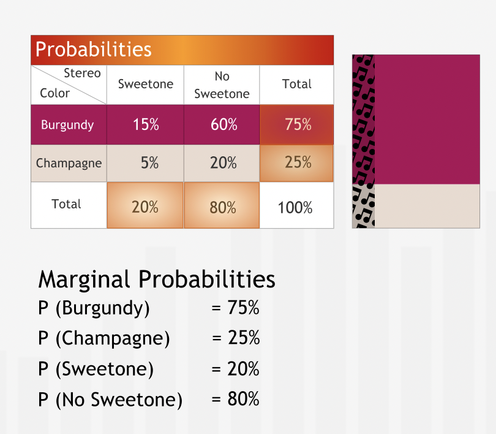
“Information about the distribution of properties in populations is often available in terms of probabilities, so the table of probabilities is a very natural way to represent the data.”
Summary¶
“For two events A and B with outcomes A1, A2, etc. and B1, B2, etc., respectively, the joint probability P(A1 & B1) is the probability that the uncertain event A has outcome A1 and the uncertain event B has outcome B1. The joint probabilities of all possible outcomes of two uncertain events can be summarized in a probability table. The marginal probability of the outcome A1 of the first uncertain event is the sum of the joint probabilities of outcomes A1 and all possible outcomes B1, B2, etc. of the second uncertain event.” 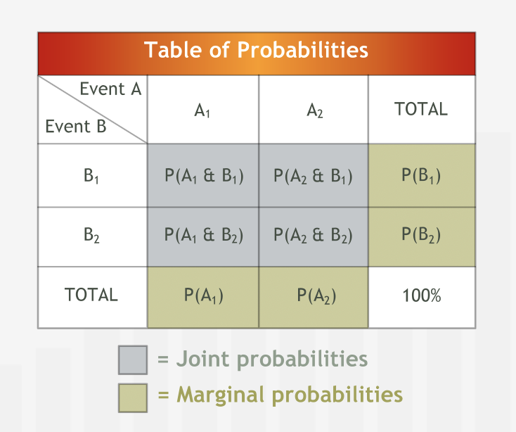
Conditional Probabilities¶
Probability of event A given event B is called caonditional probability.
It is denoted as \(P(A|B)\) 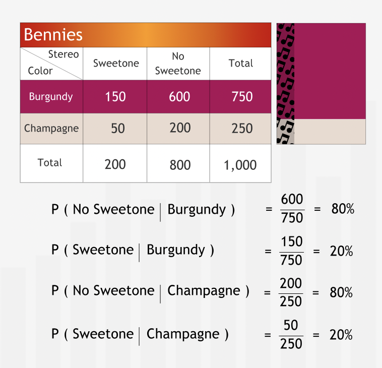
“When given information as a table of probabilities, we can use the probabilities to calculate conditional probabilities as well: we simply form the ratios of the appropriate probabilities.”
“A conditional probability is formally defined in terms of the ratio of a joint probability to a marginal probability.” 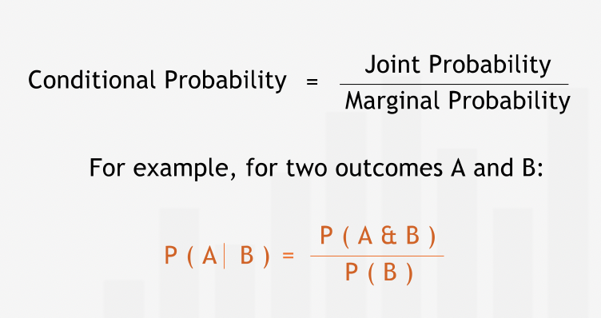 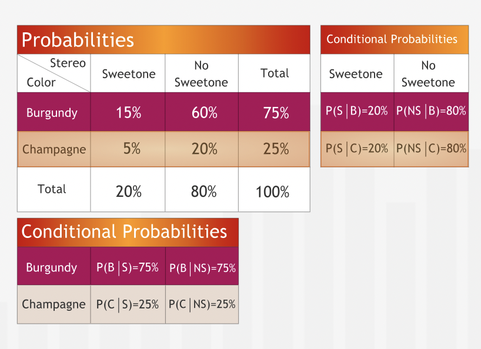
” when presented with a decision problem in which the outcomes are influenced by multiple uncertain events, constructing the joint probabilities of these events is almost always a wise first step.”
Summary¶
The conditional probability P(A | B) is the probability of the outcome A of one uncertain event, given that the outcome B of a second uncertain event has already occurred. The table of joint probabilities provides all the information needed to compute all conditional probabilities. First calculate the marginal probabilities for each event, then compute the conditional probabilities as shown below:”

Statistical Independence¶
“In general, we can interpret the fact that two uncertain events are independent in the following way: knowing that one event has occurred gives us no additional information about whether or not the other event has. For example, the results of two spins of a wheel of fortune are independent. The first result does not reveal anything about the second.”
“The joint probabilities are simply the products of the marginal probabilities.”
“Although it may seem plausible to assume that certain properties are independent, managers who take statistical independence for granted do so at their peril. We need to verify the assumption that the properties are independent by looking at and evaluating data or by proving independence on the theoretical level.”
Summary¶
“Two uncertain events A and B are said to be statistically independent if knowing that A has occurred does not tell us anything about the probability of B occurring, and vice versa. Statistical independence of two events can be demonstrated based on data or proved from theory; it should never be assumed. Events that are not statistically independent are said to be statistically dependent.” 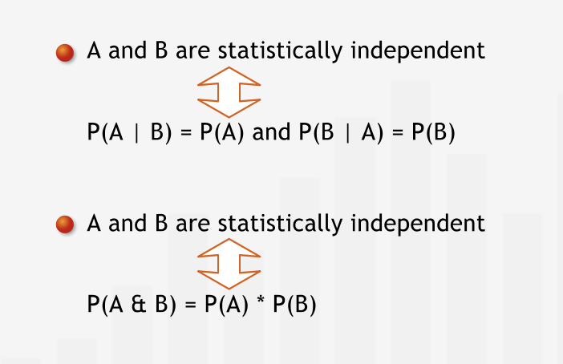
Conditional Probabilities in Decision Analysis¶
“In any decision tree, to “be at a node” is to assume that all the events on the path leading to that node from the left have already taken place. Thus, the data we associate with any decision or chance node depend directly on the sequence of events on the unique path leading up to that node from the left.”
“Specifically, the probabilities after a chance node must be conditioned on all events on the preceding path, and the outcome values must incorporate the effects of all of the preceding events.”
Summary¶
“The eventual outcomes of many decisions involve sequential uncertain events whose outcomes are determined over time. To conduct a decision analysis in such cases, we need the probabilities of the first uncertain event’s possible outcomes and conditional probabilities of future uncertain events’ possible outcomes, conditioned on the previous events’ outcomes.” 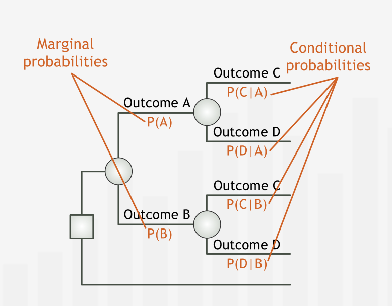
The Value of Information¶
The Expected Value of Perfect Information¶
“Managers often have the opportunity to gather more data or expertise to inform their business decisions. Depending on the business context, new information can be obtained from statistical data, expert consultants, or scientific tests and experiments. In many cases, such information can improve the accuracy of the estimates incorporated into a decision analysis.”
“Characterized as a decision problem, we can determine the Expected Value of Perfect Information (EVPI) using familiar tools: a decision tree and the expected monetary value.”
“The difference between the EMVs of the option with perfect information and without perfect information is the expected value of perfect information (EVPI)”
“The EVPI establishes an upper bound on what we should pay for perfect information. In some business cases, perfect — or near perfect — information may be available without supernatural means.”
“The EVPI establishes an upper bound on the value of any information, perfect or flawed. Through sampling, educated expertise, or imperfect testing, we might be able to gain better — though not perfect — estimates of the probabilities and the outcome values of our decision’s possible scenerios.”
“Imperfect information — information that reduces, but does not eliminate, our uncertainty about future events. For the time being, we know that we should never spend more for imperfect information than we are willing to pay for perfect information.”
“If the price of imperfect information exceeds the EVPI, we should not expend resources on it.”
Summary¶
“As managers, we would like to know exactly which outcomes will occur so we can make the best decisions. We can calculate the expected value of such perfect information — EVPI — to find an upper limit on the amount we would be willing to pay for any additional information. To calculate the EVPI, we first frame the decision problem “to buy or not to buy the perfect information.” We subtract the EMV of buying perfect information — assuming it’s free — from the EMV of not buying perfect information to find the EVPI.” 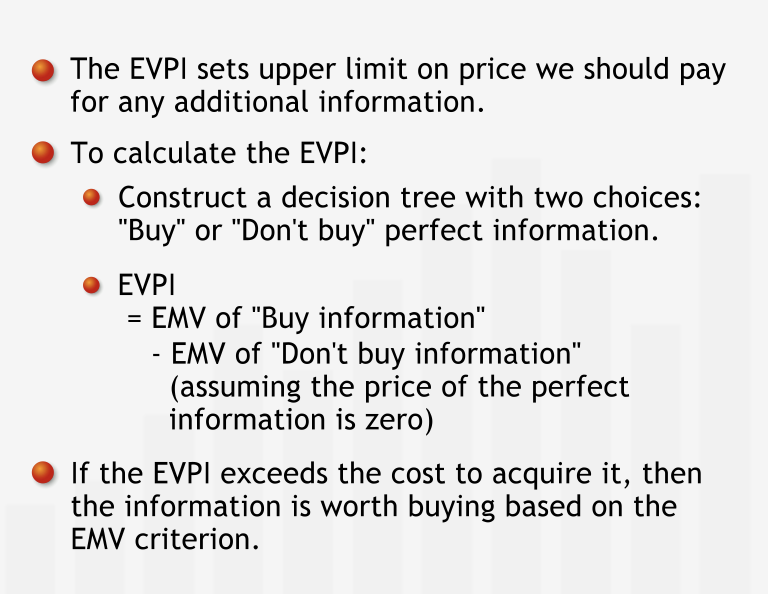
The Expected Value of Sample Information¶
“In almost all circumstances, perfect information is either impossible to assemble or prohibitively expensive. In these cases, we use imperfect information — often called “sample” information — to inform our decision. As with perfect information, the cost of sample information must be weighed against its value.”
The difference between the EMVs of the option with imperfect information and without imperfect information is the expected value of sample information (EVSI)” 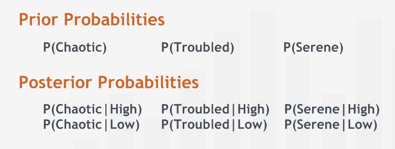
Summary¶
“By investing in professional expertise, statistical studies or tests, managers can often improve their understanding of uncertain events. Such imperfect (or “sample”) information is itself a source of uncertainty because it isn’t a perfect predictor of the outcomes of interest. Although imperfect information can improve our predictions, such information comes at a price. Responsible managers calculate the expected value of sample information (EVSI), and purchase information only if its expected value exceeds its cost. To calculate the EVSI, we pose the decision problem “to buy or not to buy the sample information,” and subtract the EMV of buying the information — assuming that it’s free - from the EMV of not buying it.” 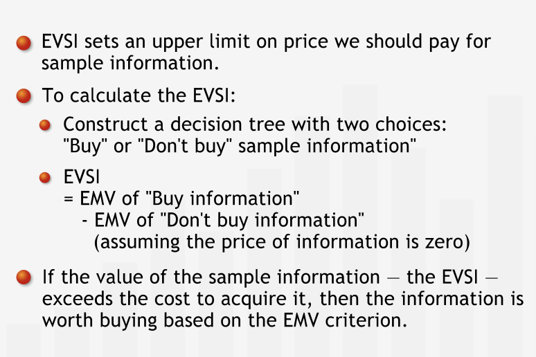
Updating Prior Probabilites¶
It is also possible to find joint and marginal probabilities if 2 out of 4 marginal probabilties and 4 of 8 conditional probabilities are known.
The joint and marginal probabilties can then be used for finding the prior probabilties.
Summary¶
“Often, information is not available in the form we need it in to inform our decision process and the calculation of the EVSI. Frequently, for example, we have access to data about the reliability of a test. The reliability of a test is given as the set of conditional probabilities P(TRi | Si), where TRi is a test result and Si is one of the scenarios the test is intended to help predict. Collectively, these conditional probabilities reveal the test’s ability to predict the outcome of the uncertain event in question. Using this information, we update our initial estimates for the probabilities of each scenario — the prior probabilities P(Si) — to achieve improved, conditional probabilities of each scenario, given the result of the test — posterior probabilities P(Si | TRi). We use the posterior probabilities to calculate the EVSI and aid our decision process.” 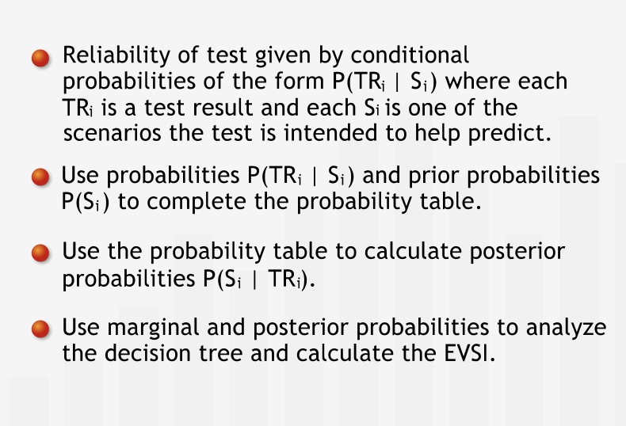
Risk Analysis¶
Introducing Risk¶
“The value of the potential loss relative to your net worth has an important influence on your willingness to take on the risk associated with uncertainty.”
“There are formal ways to measure such assessments by assigning a personal utility value to each outcome. Then we can show that maintaining the status quo — our current assets — provides greater utility than playing the game does.”
The decision should be always taken based on the risk profiles and how risk averse we are.
Summary¶
“The EMV criterion is not the only criterion that informs decisions. Besides wanting to maximize our average outcomes in the long run, we want to minimize our exposure to risk, especially when potential losses are high relative to our own net worth.” 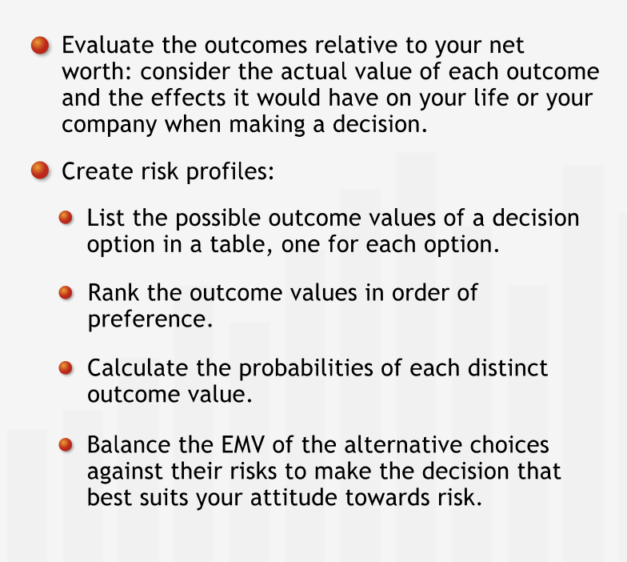
Risk Attitudes¶
“Most people are at least slightly risk averse, as shown by their inclinations to buy insurance. Some people tend to be risk seeking, that is, they are willing to forgo options with higher EMVs and accept higher levels of risk in return for the possibility of extremely high returns.”
“Although risk-seeking behavior is generally rare in the population when significant down-side risk is involved, many people tend to be somewhat risk seeking when the value of the loss risked is low. “
“When we use the EMV as the basis for decision making, we are acting in a risk neutral manner. Most people are risk neutral when they make routine “day in, day out” types of decisions — those for which potential losses are not terribly harmful to the decision-maker or her organization.”
“People feel comfortable using the EMV for routine decisions because they feel comfortable “playing the averages”: some decisions will result in losses and some in gains, but over the long run, the outcomes will average out. We expect that, over time, choosing options with the highest EMVs will lead to highest total value.”
“Most people feel comfortable using EMV as the basis for decisions that are not made repeatedly — provided the decisions have outcome values similar to those of other, more routine decisions that they make on a regular basis.”
Summary¶
“Risk profiles allow us to assess the utility different outcomes bring us, as opposed to their monetary value. The concise summary risk profiles provided helps us compare and contrast our different decision options, allowing us to choose the option we prefer based on our attitude to risk: risk averse, risk seeking, or risk neutral.” 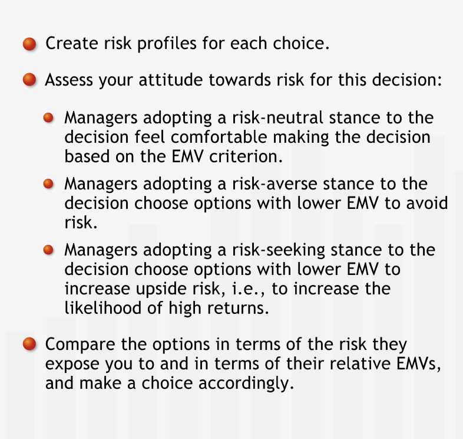